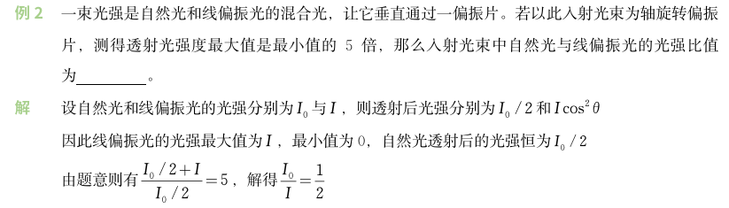

Chapter 9 光的偏振¶
光的五种偏振态
| 偏振形态 | 核心特性 | 图示 |
|---|---|---|
| 自然光 | 1. 光源中大量原子/分子间断、独立发光 2. 各方向振动无固定相位 3. 任意正交方向平均振幅相同 |
 |
| 线偏振光 | 1. 振动方向固定 2. 传播方向与振动方向垂直 |
 |
| 部分偏振光 | 1. 介于自然光和线偏振光之间 2. 垂直传播面内各方向振动振幅不同、某方向占优势 3. 无严格相位关联 |
 |
| 椭圆偏振光 | 由两个垂直、同频率、相位差恒定的线偏振光合成 |  |
| 圆偏振光 | 1. 椭圆偏振光的特例 2. 由两个垂直、同频率、相位差恒定且振幅相等的线偏振光合成 |
|
起偏和检偏
- 偏振化方向：偏振片中允许光通过的特定方向
- 起偏：自然光通过偏振片后变为线偏振光，透射光强 \(I = \frac{I_0}{2}\)
- 检偏：用偏振片检测光线是否为偏振光，当偏振片偏振化方向与偏振光振动方向垂直时，光无法通过（消光）
晶体关键概念
- 光轴：晶体内光沿该方向传播时不发生双折射的一个特殊方向
- 单轴晶体：仅有一个光轴（如方解石、石英）
- 双轴晶体：有两个光轴
- 主平面：光线与光轴组成的平面
- 光轴在入射面内时，o 光和 e 光的主平面重合
- 晶体分类
- 正晶体（如石英）：\(v_e < v_o\)，\(n_e > n_o\)
- 负晶体（如方解石）：\(v_e > v_o\)，\(n_e < n_o\)
双折射现象
光进入方解石等晶体后，会分裂为两束沿不同方向折射的光线：
- 寻常光（o光）
- 遵守折射定律，传播速度各向同性
- 偏振方向垂直于主平面
- 波阵面为球面（速度 \(v_o\) 各向相同），主折射率 \(n_o = \frac{c}{v_o}\)
- 异常光（e光）
- 不遵守折射定律，传播速度各向异性
- 偏振方向平行于主平面
- 波阵面为椭球面（速度 \(v_e\) 各向不同），主折射率 \(n_e = \frac{c}{v_e}\)
| 公式 | |
|---|---|
| 马吕斯定律 | \(I = I_0 \cos^2 \alpha\) |
| 布儒斯特定律 | \(\tan i_0 = \frac{n_2}{n_1}\) |
| o 光的折射定律 | \(n_1 \sin i = n_o \sin r_o\) |
| e 光的折射定律 | \(n_1 \sin i = n_e(\theta) \sin r_e\)，\(n_e(\theta) = \frac{n_o n_e}{\sqrt{n_o^2 \sin^2 \theta + n_e^2 \cos^2 \theta}}\) 当 e 光传播方向垂直于光轴时，\(n_e(\theta) = n_e\) |
| 四分之一波片 | \(\delta = \vert n_o - n_e \vert d = \frac{\lambda}{4}\) |
| 二分之一波片 | \(\delta = \vert n_o - n_e \vert d = \frac{\lambda}{2}\)，线偏振光通过后仍为线偏振光，但其振动面转过 \(2θ\) 角 |
| 椭圆偏振光 | \(A_o = A \sin\alpha\)，\(A_e = A \cos\alpha\) |
| 圆偏振光 | \(\Delta\varphi = \frac{\pi}{2}\) 或 \(\frac{3\pi}{2}\)，且 \(A_o = A_e\)，即线偏振光经四分之一波片（\(\alpha=\frac{\pi}{4}\)）透射 |
| 相干合振幅 | \(A_{合}=\sqrt{A_{e2}^{2}+A_{o2}^{2}+2A_{e2}A_{o2}\cos\Delta\varphi}\) |
| 偏振化方向正交 | \(A_{e2} = A_{o2} = A \cos\alpha \sin\alpha\)，\(A_{合}=\frac{\sqrt{2}}{2}A\sin2\alpha\) \(\Delta\varphi_\perp = \frac{2\pi}{\lambda} \vert n_o - n_e \vert d + \pi\) |
| 偏振化方向平行 | \(A_{e2} = A \cos^2\alpha\)，\(A_{o2} = A \sin^2\alpha\) \(\Delta\varphi_{//} = \frac{2\pi}{\lambda} \vert n_o - n_e \vert d\) |
| 旋光角度 | \(\varphi = \alpha d\) |
例题
厚为 0.025mm 的方解石晶片的表面平行于光轴。将其放在两个正交的偏振片之间，光轴与两个偏振片的偏振化方向各成 45° 角。如果射入第一个偏振片的光是波长为 400.0～760.0nm 的可见光，问透出第二个偏振片的光中少了哪些波长的光？
答案
\(\Delta\varphi=\frac{2\pi}{\lambda}(n_{o}-n_{e})d+\pi\)，当\(\Delta\varphi=(2k+1)\pi\)时，相应的波长就从透射光中消失，故有
\[
\lambda=\frac{(n_{o}-n_{e})d}{k}=\frac{(1.658 - 1.486)\times2.5\times10^{-5}}{k}=\frac{4300}{k}(\text{nm})
\]
- 当 \(k\leq5\) 时，\(\lambda\geq860\text{nm}\)，均在可见光之外
- 当 \(k=6\) 时，\(\lambda=716.7\text{nm}\)
- 当 \(k=7\) 时，\(\lambda=614.3\text{nm}\)
- 当 \(k=8\) 时，\(\lambda=537.5\text{nm}\)
- 当 \(k=9\) 时，\(\lambda=477.8\text{nm}\)
- 当 \(k=10\) 时，\(\lambda=430\text{nm}\)
- 当 \(k\geq11\) 时，\(\lambda\leq391.9\text{nm}\)
故在透出第二偏振片的光缺少的波长为 \(\lambda=430\text{nm}，477.8\text{nm}，537.5\text{nm}，614.3\text{nm}，716.7\text{nm}\)
